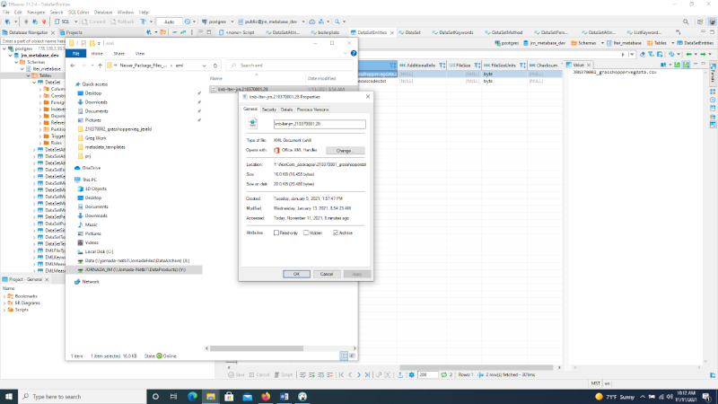
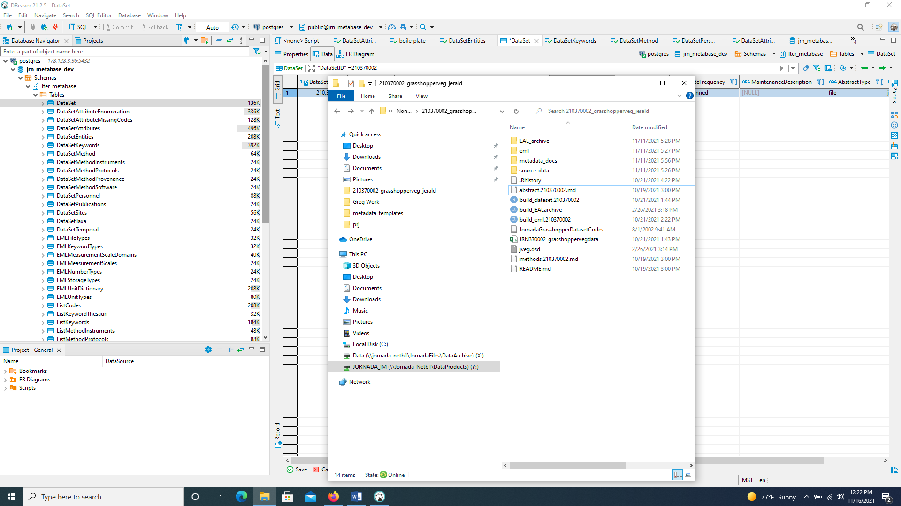
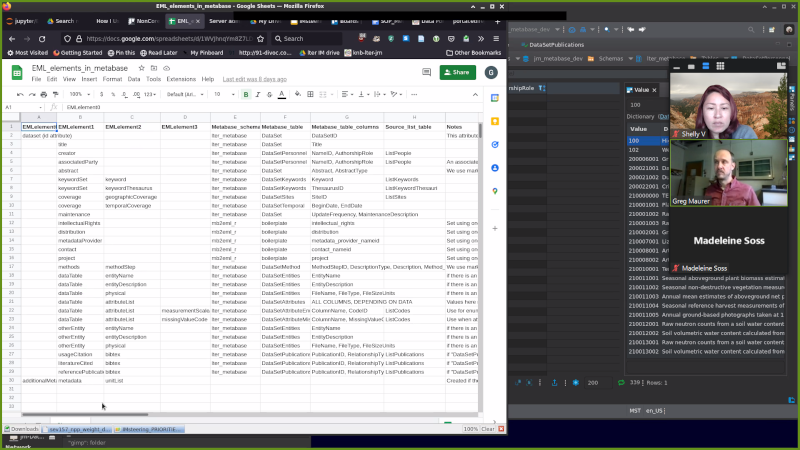
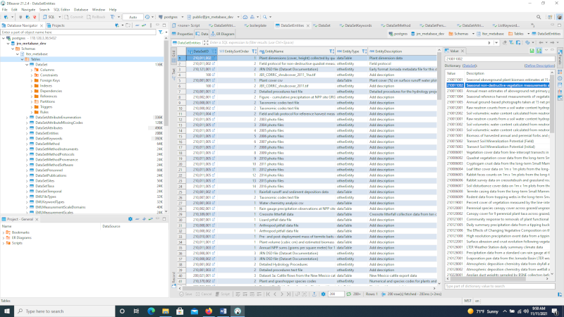
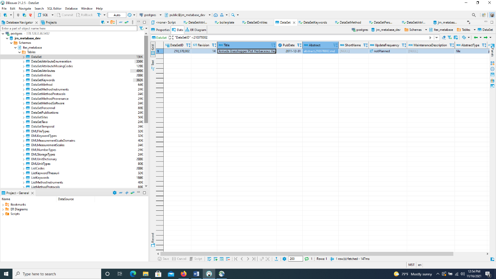
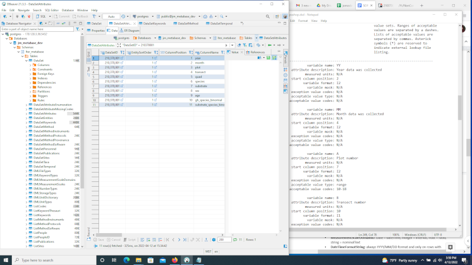
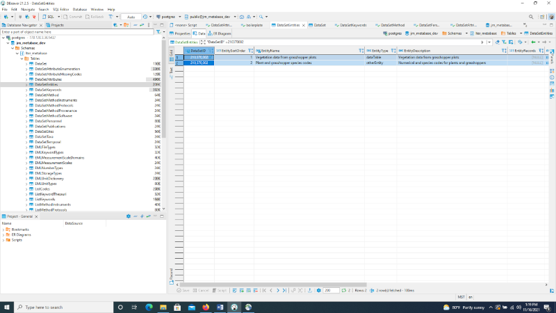
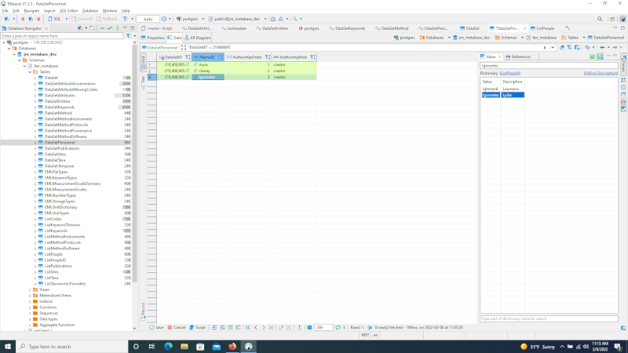

The following are resources that can be referred to for information needed in order to enter or update datasets.
Data Catalog: https://lter.jornada.nmsu.edu/data-catalog
- Shows you the Jornada Data Catalog that will link to the EDI portal. > You can explore any of the data packages that are already on the > website.
EDI Data Portal: https://portal.edirepository.org/nis/home.jsp
Trello: (used to track the datasets and to see which need updating)
There are Trello boards for NonCore and Core data packages, click on > whichever applies.
Find lists of datasets to work on:
To Do - work that still needs to be done
In Progress/Staged - if we are currently working on it
In PI review - waiting for PI’s, not ready to publish yet
Published to EDI
Download DBeaver - cloud server with several databases, used by the IM team to make edits. This process will only need to be done once.
Password: lter1234 (until you change the password elsewhere)
Navigating the JORNADA_IM server:
Open NonCore_packages 🡪 find your data set ID of interest: (i.e., 210370001_grasshopperdata) 🡪
- Find EML file: knb-lter-jrn.210370001.28.xml

- Find abstract: abstract.210370001.md.

- Find any dataset tables, i.e. substrate data, vegetation data, > species codes, etc: JRN370002_grasshoppervegdata.csv, > JRN370002_speciescodes.txt, > JRN_370001_grasshopper_visual_sampling_data.csv, > JRN_370001_grasshopper_substrate_data.csv
Other resources for data:

NAVIGATING THE DBEAVER DATABASE TO UPDATE AND INCORPORATE DATASETS:
The following are instructions for navigating through the DBeaver database in order to enter in or update datasets using the resources outlined above.
DBeaver:

>DataSet: enter “DataSetID”= 210370001 into search engine and > Enter
If no results: Add new row by clicking > {width=“0.15625in” > height=“0.15625in”} icon at the bottom or highlight a row and > click on “Duplicate current row”
Update the following fields, if applicable:
DataSetID: i.e., 210370001
Title: enter full title of the project, i.e., > Grasshopper survey and substrate utilization data at the > Jornada Basin LTER site, 1983 to 1985
PubDate: date that it’s being published: 2021-11-16 > (usually today’s date)
Abstract: file name referenced from respective dataset > folder on the Shared Drive i.e. abstact.210370001.md
ShortName: i.e., TRANFALL (use name from file on > Jornada_IM server or from “project” tab in > jornada-prj-sheets on Google Drive)
UpdateFrequency: options are notPlanned (if project is > complete), annually, biannually, or asNeeded (if project > is ongoing)
MaintenanceDescription: options are complete, ongoing, > or [NULL]
AbstractType: file
BoilerplateSetting: > jrn-default{width=“6.249405074365704in” > height=“1.734375546806649in”}
Save by clicking > “{width=”0.15207020997375328in” > height=“0.15228127734033245in”} Save” button at the > bottom.
>DataSetAttributes: enter “DataSetID”= 210370001 into search > engine and Enter
If >DataSetEntities has an EntityType dataTable, then > proceed with the following.
If no results: Add new row by clicking > {width=“0.15625in” > height=“0.15625in”} icon at the bottom or highlight a row and > click on “Duplicate current row”
To enter multiple rows, right click 🡪 Advanced Paste … 🡪 > Insert multiple rows
Reference the data sets found on JORNADA_IM server. These are > also the files entered in >DataSetEntities:
DataSetID: 210370001
EntitySortOrder: i.e. 1 for all within the same dataset, > 2 for all within the next dataset, etc.
ColumnPosition: i.e. 1, 2, 3, 4…etc. for each row
ColumnName: reference the data located in the metadata > template or data file. i.e., (jgrashop.dsd) Date, Plot, > Transect, Quadrat, Species, Mean_Diameter, Mean_Height, > Total_Number
AttributeID: i.e. Date, Plot, Transect, Quadrat, > Species, Mean_Diameter, Mean_Height, Total_Number > Repeat whatever is in ColumnName?
AttributeLabel: i.e. Date, Plot, Transect, Quadrat, > Species, Mean_Diameter, Mean_Height, Total_Number > Repeat whatever is in ColumnName?
Description: i.e., Date, Plot number [10-18], Transect > number [1-2], Quadrat number [1-20], Species code > [see JornadaGrasshopperDatasetCodes.txt], Mean plant > diameter [cm], Mean plant height [cm], Total number of > individuals per square meter per quadrat
Storage Type: i.e., Date = date; plot, quadrat, transect > number, or total number = integer; mean diameter or height > = float; species code = string
MeasurementScaleDomainID: Date = dateTime; integer = > interval; float = ratio; string = nominalText
DateTimeFormatString: ONLY on rows with column name > “date”, all others should be [NULL]. Always YYYY/MM/DD > format.
DateTimePrecision: 1 on rows filled out as above, all > others should be [NULL].
TextPatternDefinition: any nominal text doesn’t need a > unit and can be added to that row as “any text”. All > others should be [NULL].
Unit: “number” for intervals or “centimeter” for ratios. > Date and nominal text should be [NULL].
NumberType: “integer” for intervals or “real” for > ratios. Date and nominal text should be [NULL].
Repeat for each file in the server.
If a certain unit can’t be found, it must be added to the EML > unit dictionary.
Based on the R script console, any column with NA values > requires a line entry. If it is missing info, such as NA, in > the dataset, it will require an NA1 value (check define > description).
Save by clicking > “{width=”0.15207020997375328in” > height=“0.15228127734033245in”} Save” button at the > bottom.{width=“5.671875546806649in” > height=“3.4432174103237094in”}
>DataSetEntities (to associate/attach files): enter > “DataSetID”= 210370001 into search engine and Enter
The files (.pdf, .TIF, csv) found in Jornada_IM server, under > the file name i.e. 21037001_GrasshopperData, are used to > update the following columns, if applicable:
EntitySortOrder: change to subsequent number i.e. 2, 3, > 4
EntityName: change to something short but descriptive: > Plant and grasshopper species codes
EntityType: to dataTable (if dataTable, add > DataSetAttributes) or otherEntity
EntityDescription: something longer, uniform, and more > descriptive: Numerical and species codes for plants and > grasshoppers
FileType: usually csv_B (most files) or plaintext
Urlhead: > https://sfo3.digitaloceanspaces.com/jrn-pubfiles/
File Name: enter exact file name: > JRN_37001_grasshopper_substrate_data.csv
FileSizeUnits: byte
For each data set, highlight row and click on > {width=“0.13541666666666666in” > height=“0.13541666666666666in”} icon at the bottom to > “Duplicate current row”. Then update columns as above.
Save by clicking > “{width=”0.15207020997375328in” > height=“0.15228127734033245in”} Save” button at the bottom.

>DataSetKeywords: enter “DataSetID”= 210370001 into search > engine and Enter
If no results: Add new row, multiple rows, or duplicate rows as > instructed above.
Update columns as follows:
DataSetID: i.e., 210370001
Keyword: enter one word per row that has to do with the > project i.e., grasshoppers, vegetation, abundance, etc… > Use metadata template in file folder on Jornada_IM > server.
- Always use study number i.e., study 370. This is done by > adding it to ListKeywords. Any keywords that do not > exist yet, can be added in ListKeywords.
ThesaurusID: lter_cv or jornada_placenames if it is a > location/place. If it is the study ID i.e., study 370 - > then ThesaurusID should be jornada_projectnames
{width=“0.15207020997375328in” > height=“0.15228127734033245in”} Save
>DataSetMethod: enter “DataSetID”= 210370001 into search engine > and Enter
If no results: Add new row or duplicate row as instructed above.
Update columns as follows:
Create method and abstract markdown files.
- Make sure method and abstract is in R file.
>DataSetPersonnel: enter “DataSetID”= 210370001 into search > engine and Enter
If no results: Add new row, multiple rows, or duplicate rows as > instructed above.
- Enter each row with the name of people involved i.e., > dpeters
Update columns as follows:
DataSetID: i.e., 210370001
NameID: Select cell and type name into Value box on > right-hand side….. i.e., dlightfoot, wwhitford. When the > name appears in the Dictionary section, click to populate > it into the NameID field. Repeat for each name. If you > don’t see the NameID of the person you are looking for pop > up on the right-hand side, you will need to add their > names under ListPeople
{width=“5.182292213473316in” > height=“1.4975448381452319in”}
AuthorshipOrder: 1, 2, 3…
AuthorshipRole: i.e., creator, contact
{width=“0.15207020997375328in” > height=“0.15228127734033245in”} Save
>DataSetPublications:
>DataSetSites: enter “DataSetID”= 210370001 into search engine > and Enter
If no results: Add new row, multiple rows, or duplicate rows as > instructed above.
Update columns as follows:
DataSetID: i.e., 210370001
EntitySortOrder: 0
SiteID: i.e., Bajada_West, Basin_Floor, > JER_CDRRC_bounding (general use)
GeoCoverageSortOrder: 1, 2
{width=“0.15207020997375328in” > height=“0.15228127734033245in”} Save
>DataSetTaxa: This is where you can link taxonomic data to a > dataset.
>DataSetTemporal: enter “DataSetID”= 210370001 into search > engine and Enter
If no results: Add new row, multiple rows, or duplicate rows as > instructed above.
Update columns as follows:
DataSetID: i.e., 210370001
EntitySortOrder: 0
BeginDate and EndDate: (make sure it’s in proper > YYYY/MM/DD format)
- This can be found on the Google share drive, in the > jornada-prj-sheets spreadsheet, under the Project tab.
UseOnlyYear: [ ] uncheck if updated dates include > month/day
>ListKeywords: If there are keywords to add in DataSetKeywords > that are not found, they can be added here. Include any key words > that should be associated with the project.
Control F to double check that the word doesn’t already exist. > If it doesn’t, add it as follows
Add row and include:
Include any other relevant keywords that weren’t found when > searching in DataSetKeywords. Other examples include:
Keyword: creosotebush; Chihuahuan Desert
ThesaurusID: (look on > https://vocab.lternet.edu/vocab/vocab/index.php > for word, if it’s there enter as lter_cv; if not enter as > none. If it’s a place, such as site, etc., > jornada_placenames
KeywordType: theme; place
{width=“0.15207020997375328in” > height=“0.15228127734033245in”} Save
>ListPeople: To update the creators involved with a project.
Duplicate a current row in order to add people. If it has new > personnel, then
To delete a row, highlight row and click “Delete Current Row” at > the bottom. It will highlight red so you must Save in order to > save changes.
>ListPublications (to attach publications with data sets):
>ListTaxa: This is where you can enter taxonomic data. First go > to ITIS.gov to search for the ITIS Taxa ID if species is not > already listed in this section.